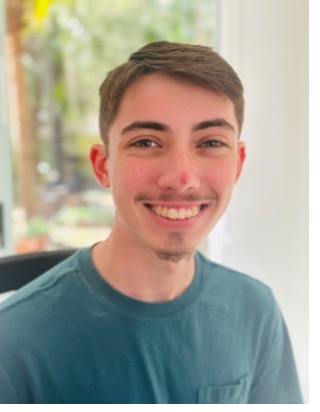

Documentary
Jacksonville Zoo — Malayan Tiger Video
A documentary profile of Malayan tigers filmed on location with a student production team, featuring interviews with zoo caretakers.
Watch documentary
UNIVERSITY OF NORTH FLORIDA STUDENT
I produce documentary, news, and informational video work with a strong focus on storytelling, interview-driven reporting, and clean, purposeful post-production.
Selected work
Documentary
A documentary profile of Malayan tigers filmed on location with a student production team, featuring interviews with zoo caretakers.
Watch documentary
News Feature
A news feature covering Creekside High School's spring musical, including interviews, event coverage, and story-driven editing.
Watch news feature
Documentary
A documentary examining the student experience through the COVID pandemic with interviews and archival storytelling.
Watch documentary
Creative / Informational
A creative storytelling package exploring holiday traditions through interviews, visual narrative, and concise editing.
Watch packageSkills
Contact
Email: adamszilagyi@gmail.com
Location: Jacksonville, FL
Available for part-time and freelance video production, editing, videography, and content-creation opportunities in Jacksonville and St. Johns County.